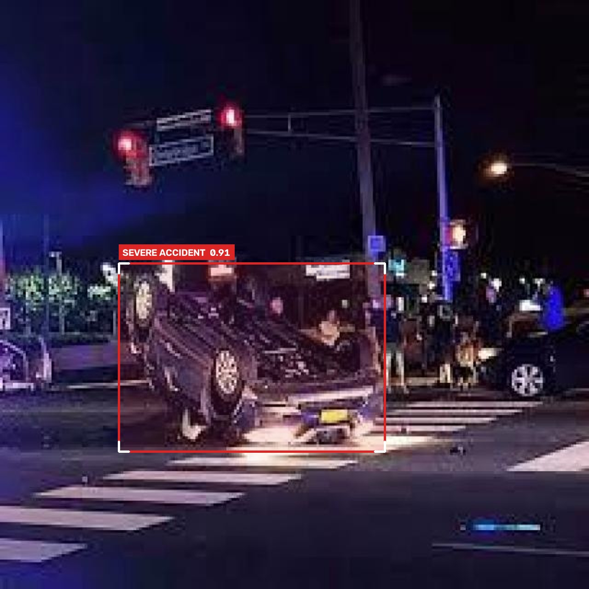
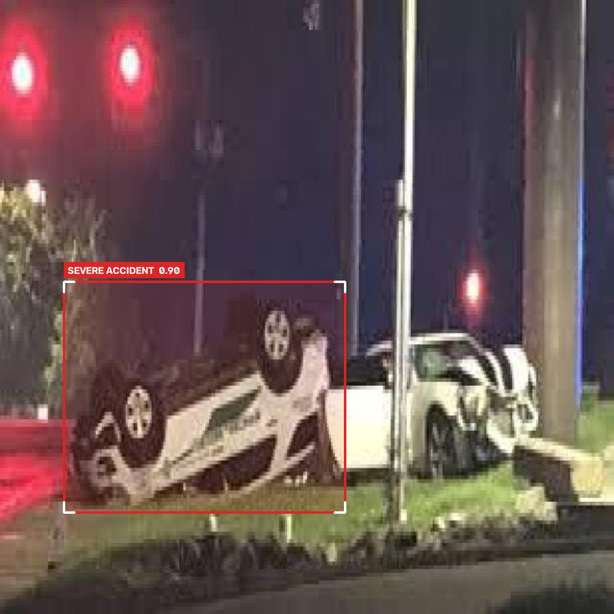
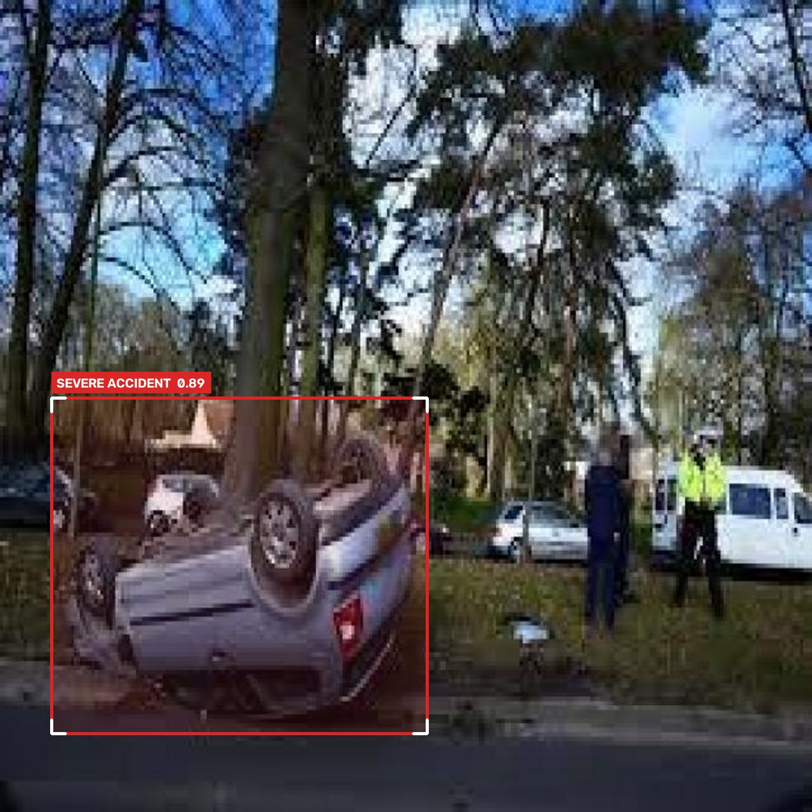
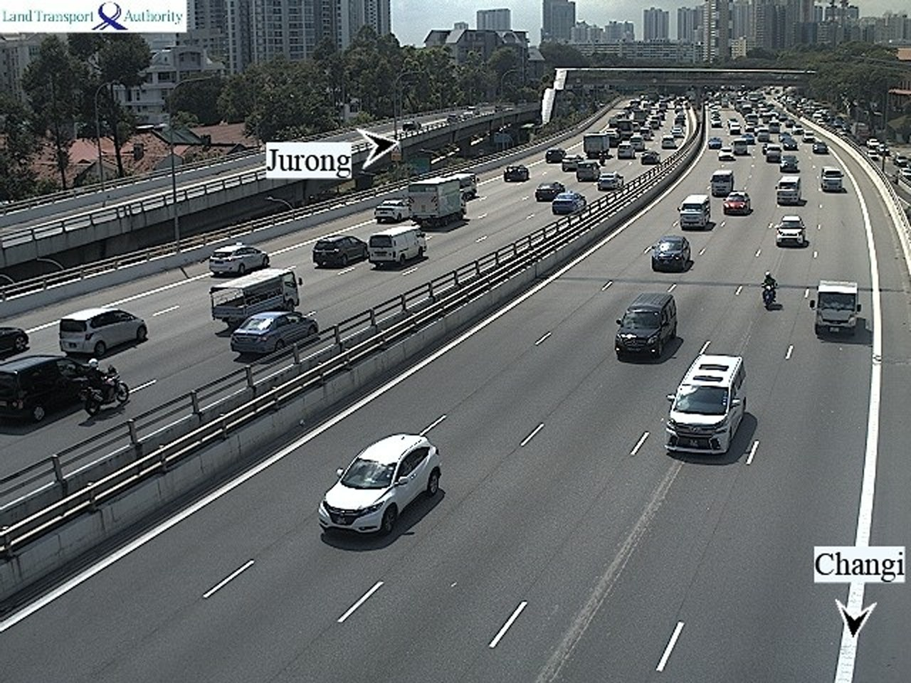

Minutes lost in the golden hour
A crash on a quiet stretch can go unreported until someone stops and calls. Every minute cuts survival odds.
check_circleRoadNetra: accident model on every frame, alert routed to 112 automatically.
RoadNetra AI watches existing CCTV feeds, spots severe crashes, rollovers and potholes, rejects false alarms, and sends a geotagged alert to the right authority in under two seconds.
Measured on 273 unseen test images · YOLOv8s · see model results

Designed to hand off to
The problem
India has thousands of highway and city CCTV cameras, but footage is reviewed after the fact. Crashes are reported by passers-by, and potholes by complaints.
A crash on a quiet stretch can go unreported until someone stops and calls. Every minute cuts survival odds.
Shadows, glare and traffic jams fool naive detectors, and a control room that gets spammed soon stops listening.
Road damage is fixed after it causes a blow-out or a petition, not when it first appears.
How it works
Two specialised models share one video feed. The accident model sees every frame; the pothole model samples once a second on a background thread, so the live view never stutters.
Both models run on the camera feed at their own pace.
A hazard must persist 3 consecutive frames above confidence 0.47.
Accidents are P1 Critical; potholes are graded by size.
112, Highway Police, NHAI or PWD, with GPS and the evidence frame.
A one-click PDF work order with the snapshot for maintenance teams.
| Hazard | Severity | Routed to | Response SLA |
|---|---|---|---|
| Severe accident · rollover · crash · fire | P1 Critical | 112 Emergency · Highway Police | Immediate |
| Large pothole (box > 5% of frame) | P2 High | NHAI Maintenance · Municipal PWD | 24 h |
| Smaller pothole · surface cracking | P3 Medium | Municipal PWD | 72 h |
Real model results
These are our accident model's actual outputs and scores on 273 test images it never saw during training, including 29 busy-traffic scenes where it must stay quiet.




Known limits: it misses about 1 in 6 crash frames (RoadNetra's multi-frame rule recovers most of them), and it is weaker on straight top-down drone views, which we are adding to the training data next.
The product
Click through the working prototype. Operational data is a realistic demo; model outputs are real.
IEEE Hackathon 2026 · Gen AIML track · Problem 03.1 "Vision in the Wild". Team lead: Bhawesh Gautam.